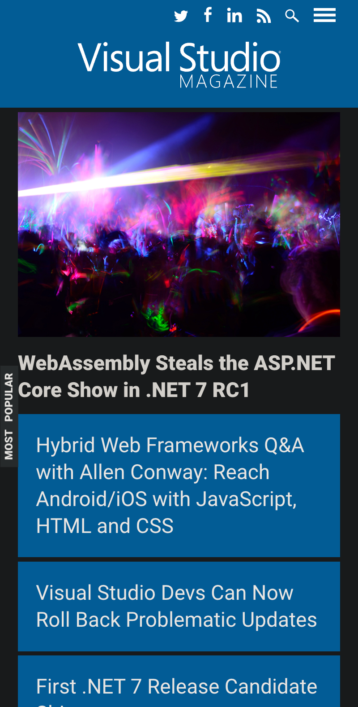

Horizontal Alignment
Visual Studio Magazine Visual Studio Magazine makes good use of horizontal alignment by ensuring content by placing a single element per row on mo mobile viewport. However, when view on a larger desktop screen, these sections aligned in defined box sections that draw the viewers attention.
Contrast
Visual Studio MagazineVisual Studio Magazine ensures proper contrast is used by placing white text on darker background and vis versa.
Fitt's Law
Visual Studio MagazineBy placing article headlines in boxes, the viewers eyes are more easily able to scan for information. While the boxes contain proper whitespace that allow for visual separation, they are placed close enough so that the viewer's eyes do not need to travel far from on article headline to another.